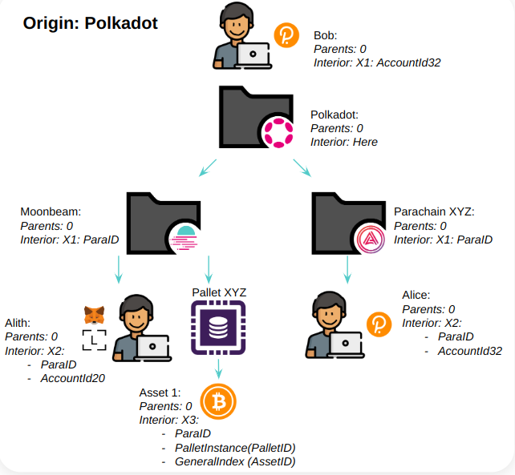

<!DOCTYPE html>
<html lang="en">

<head>
  <meta charset="utf-8" />
  <meta name="viewport" content="width=device-width, initial-scale=1.0, maximum-scale=1.0, user-scalable=no" />

  <title>Cross Consensus Messaging (XCM)</title>
  <link rel="shortcut icon" href="./../../../assets/favicon.ico" />
  <link rel="stylesheet" href="./../../../dist/reset.css" />
  <link rel="stylesheet" href="./../../../dist/reveal.css" />
  <link rel="stylesheet" href="./../../../assets/styles/PBA-theme.css" id="theme" />
  <link rel="stylesheet" href="./../../../css/highlight/shades-of-purple.css" />

  <link rel="stylesheet" href="./../../.././assets/styles/custom-classes.css" />

</head>

<body class="site">
  <header class="site-header">
    <!-- This logo is a link only on the watching server, not the production build -->
      
  </header>
  <main class="reveal">
    <article class="slides">
      <section  data-markdown><script type="text/template">

# Cross Consensus Messaging (XCM)

## _Core Concepts, Terms, and Logic_

<aside class="notes"><p><strong>Pre-requisites</strong></p>
<ul>
<li>FRAME (Storage Items, Dispatchables, Event, Errors, etc.)</li>
<li>Polkadot &amp; parachains conceptually</li>
<li>Assets (NFTs and fungibles)</li>
</ul>
</aside></script></section><section  data-markdown><script type="text/template">
## _At the end of this lecture, you will be able to:_

<pba-flex center>

- Define the concepts, syntax, and terms of XCM
- Navigate exciting resources that relate to XCM
- Differentiate between XCM and message-passing protocols like XCMP
</script></section><section  data-markdown><script type="text/template">
## What cross-chain use cases exist?

Performing operations on different blockchains?

How might you go about designing a _system_ to facilitate them?

<aside class="notes"><p>EXERCISE: ask the class to raise hands and postulate on generally what one might do.</p>
</aside></script></section><section  data-markdown><script type="text/template">
## 🎬 Some Concrete Use-cases

<pba-flex center>

1. Cross-consensus asset transfers
1. Execute platform-specific actions (extrinsics) such as governance voting
1. Enables single use-case chains e.g. [Statemint/e](https://github.com/paritytech/cumulus/tree/master/parachains/runtimes/assets) as asset parachains

<aside class="notes"><p>While the goal of XCM is to be general, flexible and future-proof, there are of course practical needs which it must address, not least the transfer of tokens between chains.
We need a way to reason about, and pay for, any required fees on the receiving CS.
Platform-specific action; for example, within a Substrate chain, it can be desirable to dispatch a remote call into one of its pallets to access a niche feature.
XCM enables a single chain to direct the actions of many other chains, which hides the complexity of multi-chain messaging behind an understandable and declarative API.</p>
</aside></script></section><section  data-markdown><script type="text/template">
### XCM aims to be a _language communicating ideas between consensus systems._
</script></section><section  data-markdown><script type="text/template">
## Cross _Consensus_?

**Consensus systems**: A chain, contract or other global, encapsulated, state machine singleton.

<pba-flex center>

- Can be any programmatic state-transition system that exists within consensus which can send/receive datagrams.
- It does not even have to be a _distributed_ system, only that it can form _some_ kind of consensus.

<aside class="notes"><p>A consensus system does not necessarily have to be a blockchain or a smart contract, it can be something that already exists in the Web 2.0 world, such as an AWS server.</p>
</aside></script></section><section  data-markdown><script type="text/template">
## 🤟 A Format, not a Protocol

XCM is a **_messaging format_**.

It is akin to the post card from the post office

It is _not_ a messaging protocol!

A post card doesn't send itself!

<aside class="notes"><p>It cannot be used to actually “send” any message between systems; its utility is only in expressing what should be done by the receiver.
like many aspects core to Substrate, this separation of concerns empowers us to be far more generic and enable much more.
A post card relies on the postal service to get itself sent towards its receivers, and that is what a messaging protocol does.</p>
</aside></script></section><section  data-markdown><script type="text/template">
## 😬 Why not _native_ messages?

Drawbacks of relying on native messaging or transaction format:

<pba-flex center>

- Lack of uniformity between consensus systems on message format
- Common cross-consensus use-cases do not map one-to-one to a single transaction
- Operations on consensus systems have different assumptions e.g. fee payment

<aside class="notes"><ul>
<li>A system which intends to send messages to more than one destination would need to understand how to author a message for each.
On that note, even a single destination may alter its native transaction/message format over time.
Smart contracts might get upgrades, blockchains might introduce new features or alter existing ones and in doing so change their transaction format.</li>
<li>Special tricks may be required to withdraw funds, exchange them and then deposit the result all inside a single transaction.
Onward notifications of transfers, needed for a coherent reserve-asset framework, do not exist in chains unaware of others.</li>
<li>Some systems assume that fee payment had already been negotiated, while some do not.</li>
</ul>
</aside></script></section><section  data-markdown><script type="text/template">
## XCM Communication Model

XCM is designed around four 'A's:

<pba-flex center>

- **Agnostic**: No assumptions about Consensus System messaged
- **Absolute**: Guaranteed delivery, interpretation, and ordering
- **Asynchronous**: No assumption of blocking for sender/receiver
- **Asymmetric**: No results or callbacks (separately communicated!)

<aside class="notes"><ul>
<li><strong>Agnostic</strong>: XCM makes no assumptions about the nature of the Consensus System between which messages are being passed.</li>
<li><strong>Absolute</strong>: XCM messages are guaranteed to be delivered and interpreted accurately, in order and in a timely fashion.</li>
<li><strong>Asynchronous</strong>: XCM messages in no way assume that the sender will be blocking on its completion.</li>
<li><strong>Asymmetric</strong>: XCM messages do not have results.
Any results must be separately communicated to the sender with an additional message.</li>
</ul>
</aside></script></section><section  data-markdown><script type="text/template">
## Async vs Sync

XCM crossing the barrier between a single consensus system<br/>cannot generally be synchronous.

No guarantees on delivery time.

<aside class="notes"><p>Generally, consensus systems are not designed to operate in sync with external systems.
They intrinsically need to have a uniform state to reason about and do not, by default, have the means to verify states of other consensus systems.
Thus, each consensus system cannot make any guarantees on the expected time required to deliver results; doing so haphazardly would cause the recipient to be blocked waiting for responses that are either late or would never be delivered, and one of the possible reasons for that would be an impending runtime upgrade that caused a change in how responses are delivered.</p>
</aside></script></section><section  data-markdown><script type="text/template">
## XCM is "fire and forget"

XCM has no results:

<pba-flex center>

- No errors reported to sender
- No callbacks for sender

Similar to UDP

<aside class="notes"><p>The receiver side can and does handle errors, but the sender will not be notified, unless the error handler specifically tries to send back an XCM that makes some sort of XCM that notifies status back to the origin, but such an action should be considered as constructing a separate XCM for the sole purpose of reporting information, rather than an intrinsic functionality built into XCM, akin to how UDP can also create a &quot;response&quot; to an incoming datagram, yet the response is too considered as a separate UDP datagram instance.</p>
</aside></script></section><section  data-markdown><script type="text/template">
## Async XCM

We _could_ have XCM describe async behavior but do not because:

<pba-flex center>

- Complexity, custom per sender/receiver pair
- Expense of operating in fee-based systems

<aside class="notes"><p>Asynchronous systems vary widely by implementation, and as a protocol that attempts to bridge between disparate consensus systems, XCM does not attempt to define the behavior or architecture of its interlocutors.
Rather, XCM defines and standardizes the interface and semantics that two or more consensus systems can use to interact with each other, but leaves the ultimate implementation details to its participating systems.</p>
</aside></script></section><section  data-markdown><script type="text/template">
## 📍 Locations in XCM

`MultiLocation` = a **_relative_** location in the consensus multiverse.

All entities are addressed as paths to them, _relative_ to the current consensus system.
pub struct MultiLocation {
pub parents: u8,
pub interior: Junctions,
}

````

<aside class="notes"><p>The <code>MultiLocation</code> type identifies any single <em>location</em> that exists within the world of consensus.
Representing a scalable multi-shard blockchain such as Polkadot, a lowly ERC-20 asset account on a parachain, a smart contract on some chain, etc.
It is always represented as a location <em>relative</em> to the current consensus system, and never as an absolute path, due to the fact that the network structure can always change, and so absolute paths can quickly go out of date.</p>
</aside></script></section><section  data-markdown><script type="text/template">
## Junction

An item in a path to describe the<br/>relative location of a consensus system:

<pba-flex center>

- `Parachain`
- `AccountId32`
- `PalletInstance`
- `GeneralKey`

<aside class="notes"><p>This is akin to a directory on a file path, e.g. the <code>foo</code> in <code>/foo/bar</code>.</p>
</aside></script></section><section  data-markdown><script type="text/template">
## Junction*s*\*

```rust
enum Junctions {
    X1(Junction),
    X2(Junction, Junction),
    X3(Junction, Junction, Junction),
    // ...
    X8(Junction, /*...*/),
}
````

Enum containing multiple `Junction`s

<aside class="notes"><p>An array like <code>[Junction; 8]</code> or a <code>Vec</code> is explicitly not used in place of the <code>Junctions</code> enum.
This is because <code>Vec</code>s cannot be pattern-matched, and arrays have a fixed size at compilation time, and thus unused <code>Junction</code> &quot;element slots&quot; will always be required to be filled in, bloating the <em>encoded</em> size of a <code>Junctions</code> data structure.</p>
</aside></script></section><section  data-markdown><script type="text/template">
## MultiLocation Examples

- `../Parachain(1000)`: Evaluated within a parachain, this would identify our sibling parachain of index 1000. (In Rust we would write `MultiLocation { parents: 1, junctions: X1(Parachain(1000)) }` or alternatively `ParentThen(Parachain(1000)).into()`.)

- `../AccountId32(0x1234...cdef)`: Evaluated within a parachain, this would identify the 32-byte account 0x1234…cdef on the relay chain.

- `Parachain(42)/AccountKey20(0x1234...abcd)`: Evaluated on a relay chain, this would identify the 20-byte account 0x1234…abcd on parachain number 42 (presumably something like Moonbeam which hosts Ethereum-compatible accounts).
</script></section><section  data-markdown><script type="text/template">
## MultiLocation Examples

<!-- TODO DESIGN: use multilocation graphic from above and add labels in fragment / new slide here -->
<!-- Base on this set of slides: https://docs.google.com/presentation/d/18qRqqw73L9NTWOX1cfGe5sh484UgvlpMHGekQHu9_8M/edit#slide=id.g8063ab3d6f_0_1418 . If hard, just make these into images via screenshot & use full screen -->



<aside class="notes"><p>speak to an example of non-parachain multi-location that would use a bridge
XCM reasons about addressing (as in a postal address) that must include understanding where you are, not just where you are going!
This will be very powerful later on (Origins)</p>
<!-- TODO: does XCM explicitly need to know the Origin of the message? Could there be anonymous XCM? (no "return to sender" field on mail) --></aside></script></section><section  data-markdown><script type="text/template">
## Cross-Consensus Origins

A `MultiLocation` denoting where an XCM originated from

_Relative_ to the current location

Can be converted into a pallet origin in a FRAME runtime

<aside class="notes"><p>Since <code>MultiLocation</code>s are relative, when an XCM gets sent over to another chain, the origin location needs to be rewritten from the perspective of the receiver, before the XCM is sent to it.
This is calling re-anchoring.</p>
</aside></script></section><section  data-markdown><script type="text/template">
## `MultiLocation` established!

Now we know how to describe the destination, what _do we want to send_?

Let's start with messages (XCVM Programs!) about **_assets_**.

<aside class="notes"></aside></script></section><section  data-markdown><script type="text/template">
<pba-col>

### 💰 `MultiAsset` in XCM

There are many _classes_ of assets (fungible, NFTs,...)

```rust
struct MultiAsset {
   id: AssetId,
```

The datatype `MultiAsset` describes them all.
</script></section><section  data-markdown><script type="text/template">
## Asset Representation

<div style="font-size: smaller">

```rust
struct MultiAsset {
    pub id: AssetId,
    pub fun: Fungibility,
}

enum AssetId {
    Concrete(MultiLocation),
    Abstract([u8; 32]),
}

enum Fungibility {
    Fungible(u128),
    NonFungible(AssetInstance),
}

enum AssetInstance {
    Undefined,
    Index(u128),
    Array4([u8; 4]),
    Array8([u8; 8]),
    Array16([u8; 16]),
    Array32([u8; 32]),
}
```

</div>

<aside class="notes"><p>A MultiAsset is composed of an asset ID and an enum representing the fungibility of the asset.
Asset IDs can either be Concrete or Abstract:
Concrete assets - can be identified by a <code>MultiLocation</code> path that leads to the system that issues it
Abstract assets - can be identified only by a label/name</p>
<p>Assets can also either be fungible or non-fungible:
Fungible - each token of this asset has the same value as any other
NonFungible - each token of this asset is unique and cannot be seen as having the same value as any other token under this asset</p>
<p>Non-fungible assets will then also need to further specify which exact token it represents under the same asset ID, and we use the AssetInstance enum to express the uniqueness of such a token.</p>
</aside></script></section><section  data-markdown><script type="text/template">
## Convenience methods to create `MultiAsset`

```rust
/// Creates 10 billion units of fungible native tokens
let fungible_asset: MultiAsset = (Here, 10_000_000_000u128).into();
//          or MultiAsset::from((Here, 10_000_000_000u128)) ^^^^

/// Creates an abstract NFT with an undefined asset instance
let nft_asset: MultiAsset = ([0; 32], ()).into();
```

<aside class="notes"><p>In Polkadot, a unit of native token = 1 planck, and 10 billion plancks = 1 DOT</p>
</aside></script></section><section  data-markdown><script type="text/template">
## Asset Wildcards and Filters

```rust
enum WildMultiAsset {
    All,
    AllOf { id: AssetId, fun: WildFungibility },
    AllCounted(u32),
    AllOfCounted { id: AssetId, fun: WildFungibility, count: u32 },
}

enum WildFungibility {
    Fungible,
    NonFungible,
}

enum MultiAssetFilter {
    Definite(MultiAssets),
    Wild(WildMultiAsset),
}

struct MultiAssets(Vec<MultiAsset>);
```

<aside class="notes"><p>These are types used by various instructions that want to express the idea to select all of one kind of assets in the holding register, but do not know the exact amount of assets that already exists in holding.
&quot;Wild&quot; in this context has the same meaning as the &quot;wild&quot; in &quot;wildcard&quot;.
The &quot;counted&quot; variants is used when we want to limit the amount of assets that the wildcard can select.
This is very useful in cases where we want to give an upper limit to the execution time required to select the assets within the holding register, or that we simply just want the specified number of types of assets within the specified class of assets.</p>
</aside></script></section><section  data-markdown><script type="text/template">
## Reanchoring

`MultiLocation`s are relative.

**Scenario:**<br/>
Current consensus system is `Para(1337)`.<br/>
Destination consensus system is `Para(6969)`.

<pba-flex center>

- Where is `Here`?
- What happens when I send a `MultiAsset`<br/>with an `AssetId` of `Concrete(Here)` to `Para(6969)`?

<aside class="notes"><p>MultiLocations are relative, so they must be updated and rewritten when sent to another chain.</p>
</aside></script></section><section  data-markdown><script type="text/template">
## 🤹 Many models for <br/> transferring assets

<pba-flex center>

1. "Remote control" an account on another system
1. Reserve transfers
1. Teleport transfers

<aside class="notes"><p>We might want to simply control an account on a remote chain, allowing the local chain to have an address on the remote chain for receiving funds and to eventually transfer those funds it controls into other accounts on that remote chain.
Accounts that are controllable by a remote chain are often referred to as <strong>Sovereign accounts</strong>.</p>
</aside></script></section><section  data-markdown><script type="text/template">
## 🤹 Many models for <br/> transferring assets

<pba-cols>
<pba-col>


</pba-col>
<pba-col>


</pba-col>
</pba-cols>

<aside class="notes"><p>TODO: use examples from here <a href="https://medium.com/polkadot-network/xcm-the-cross-consensus-message-format-3b77b1373392">https://medium.com/polkadot-network/xcm-the-cross-consensus-message-format-3b77b1373392</a> to describe the images</p>
</aside></script></section><section  data-markdown><script type="text/template">
## Next steps

<pba-flex center>

1. Blog series introducing XCM: Parts [1](https://medium.com/polkadot-network/xcm-the-cross-consensus-message-format-3b77b1373392), [2](https://medium.com/polkadot-network/xcm-part-ii-versioning-and-compatibility-b313fc257b83), and [3](https://medium.com/polkadot-network/xcm-part-iii-execution-and-error-management-ceb8155dd166).
1. XCM Format [repository](https://github.com/paritytech/xcm-format)
<!-- 1. TODO: fill this in - polkadot / cumulus / parachains repos?  -->
</script></section><section  data-markdown><script type="text/template">
## Glossary

<!-- TODO: ensure these are in the class glossary! Remove this slide and simply reference in the slides -->

- UMP (Upward Message Passing) allows parachains to send messages to their relay chain.
- DMP (Downward Message Passing) allows the relay chain to pass messages down to one of their parachains.
- HRMP (Horizontal Message Passing)
- XCM
- XCVM
- XCMP (Cross-Consensus Message Passing), which is perhaps the best known of them, allows the parachains to send messages between themselves.
- {XCM} Junctions
- MultiLocations
- Sovereign account(s)
- Holding register
- Consensus system
- {XCM} Instructions
- {XCM config} Barriers
- {XCM config} Filters
- UDP {networking}
- TTL {networking}
</script></section><section  data-markdown><script type="text/template">
## Polkadot Network Diagram


</script></section>
    </article>
  </main>

  <script src="./../../../dist/reveal.js"></script>

  <script src="./../../../plugin/markdown/markdown.js"></script>
  <script src="./../../../plugin/highlight/highlight.js"></script>
  <script src="./../../../plugin/zoom/zoom.js"></script>
  <script src="./../../../plugin/notes/notes.js"></script>
  <script src="./../../../plugin/math/math.js"></script>
  <script>
    function extend() {
      var target = {};
      for (var i = 0; i < arguments.length; i++) {
        var source = arguments[i];
        for (var key in source) {
          if (source.hasOwnProperty(key)) {
            target[key] = source[key];
          }
        }
      }
      return target;
    }

    // default options to init reveal.js
    var defaultOptions = {
      controls: true,
      progress: true,
      history: true,
      center: true,
      transition: 'default', // none/fade/slide/convex/concave/zoom
      slideNumber: true,
      plugins: [
        RevealMarkdown,
        RevealHighlight,
        RevealZoom,
        RevealNotes,
        RevealMath
      ]
    };

    // options from URL query string
    var queryOptions = Reveal().getQueryHash() || {};

    var options = extend(defaultOptions, {"width":1400,"height":900,"margin":0,"minScale":0.2,"maxScale":2,"transition":"none","controls":true,"progress":true,"center":true,"slideNumber":true,"backgroundTransition":"fade"}, queryOptions);
  </script>


  <script>
    Reveal.initialize(options);
  </script>
</body>

</html>
